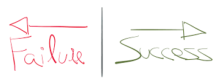

Degree
I have not finished my degree yet. I attended one year at the University of Nebraska, Lincoln persuing a computer engineering degree. I have completed Calculus, Chemistry, Discrete Mathematics, and varius coding language courses. After I graduate from Dev Code Camp, I hope to return to college and complete my computer engineering degree.
Municiple Worker
For the past two years I have spent my time working for the City of Brookfield. I was an umpire for their recreational baseball league, and a camp instrutor for their adventure camp. It was my responsibility to maintain order, provide medical attention, write lesson plans, and call for back up if things got out of hand. This work was more physically draining than anything else. It requires perserverence to entertain droves of kids for multiple hours in a day.
-
Retail
I have worked many front end jobs from stocking shelves to waiting at banquets. It is not physically or mentally demanding work, but it is emotionally draining to deal with the average customer on a day to day basis; they are not always the nicest people. I believe it is important for everyone to learn how to smile at the next person after getting ridiculed by the last. From this humble work experience I have gained empathy and resilience, two important traits to have when entering the workforce.